로판·궁중 웹툰 추천 TOP 30
로판, 성장로판, 왕족/귀족, 서양, 궁중로맨스 같은 태그가 붙은 작품을 모았어요. 네이버웹툰·카카오웹툰·레진코믹스에서 조건에 맞는 작품 591개 중 인기 순으로 30개를 골랐어요. 인기 TOP 3: 이번 생은 가주가 되겠습니다, 세이렌: 악당과 계약 가족이 되었다, 엄마가 계약결혼 했다
2026-10-06 기준 · 성인 작품 제외
내 취향으로 더 좁혀서 추천받기 →-
1
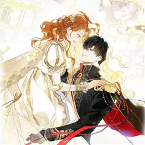
카카오웹툰이번 생은 가주가 되겠습니다
“…한번 해 보자. 내가 가주가 되는 거야.” 제국에서 제일가는 가문, 롬바르디의 사생아로 환생한 피렌티아. 게다가 이 가문은 막대한 부는 물론 외교와 문화까지 통달한 말그대로 제국의 역사 자체! 금수저 오브 금수저 인생 당첨! 앞으로는 탄탄대로일 거라 생각했는데…. 아버지는 돌아가시…
로판사이다회귀카카오웹툰에서 보기 → -
2
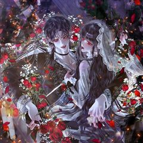
카카오웹툰세이렌: 악당과 계약 가족이 되었다
아리아는 계약 결혼을 제안했다. 그것도, 악마에게 영혼을 팔았다는 발렌타인의 대공자에게. 자신을 지키고, 그를 지키기 위해서. [나와 결혼해.] 아리아는 단풍잎 같은 손으로 쪽지와 함께 혼인 서약서를 내밀었다. [계약 결혼이니까 10년 뒤에 이혼…….] 그러자 어린 대공자는 쓰고 있던…
로판회귀카카오웹툰에서 보기 → -
3
 카카오웹툰
카카오웹툰엄마가 계약결혼 했다
리리카는 술주정뱅이 어머니를 모시고 하루하루 먹고 사는 빈민가의 소녀다. 그러던 어느날...... “꺄악, 뜨거워! 싫어!” 어머니가 비명을 지르며 잠에서 깨어나더니, “리리,살아있구나, 어려졌니?” 엉뚱한 소리를 하시고 “오늘이 며칠이지?” 정신을 못 차리시더니 “이럴수가, 돌아왔어…
로판힐링육아물카카오웹툰에서 보기 → -
4카카오웹툰
남편을 내 편으로 만드는 방법
판타지 소설 속 남편의 손에 죽는 악역 조연, ‘루드베키아’가 되었다. 이 세계의 망할 아버지는 내 정략결혼 상대를 또 물어왔다. 문제는 그 상대가 바로 날 죽이게 될 남편이라는 것! 일단은 살길을 찾아야 한다. 북부 사람들에게 최대한 무해하게 보이면서 원작에서 내가 죽일 남편의 여동…
로판설렘폭발눈물샘자극빙의카카오웹툰에서 보기 → -
5
 카카오웹툰
카카오웹툰악역의 엔딩은 죽음뿐
역하렘 공략 게임의 악역, 에카르트 공작가의 하나뿐인 공녀이자 입양아 페넬로페로 빙의했다. 그런데 하필 난이도는 극악! 뭘 해도 엔딩은 죽음뿐! ‘진짜 공녀’가 나타나기 전에 여주의 어장 중 한 명을 공략해서 살아남아야 한다. 사사건건 시비를 거는 오빠 1, 2. 모든 루트가 죽음으로…
로판서스펜스자극적인빙의카카오웹툰에서 보기 → -
6
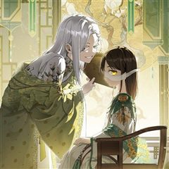
카카오웹툰무림세가 천대받는 손녀 딸이 되었다
무협지 속 세상으로 빙의한 주인공. 남주인공을 영웅의 길로 이끄는 참스승이자 완전체, 백리의강의 어리석은 민폐딸 백리연으로 빙의한다. 뜻밖의 죽임을 당하고, 눈을 떠보니 모든 것을 되돌릴 수 있는 아이 때로 회귀하는데. "나, 이번엔 사랑받을 수 있는 거야?" 이번 생에서는 민페딸이…
로판사이다육아물카카오웹툰에서 보기 → -
7
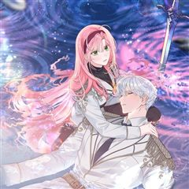
카카오웹툰빙의자를 위한 특혜
※사후 세계를 대비하세요! 죽기 직전에 받은 이상한 스팸문자. 죽은 줄 알고 눈떠보니 빙의심사국이다. 정말 사후 세계가 있다고? 책 속으로 빙의될 거라고? "특별히 선호하는 장르가 있으신가요?" 전생에 덕질로 모든 장르를 섭렵한 나. 다음 생은 귀염 뽀짝한 여자아이가 되…
로판사이다빙의카카오웹툰에서 보기 → -
8
 카카오웹툰
카카오웹툰다시 한번, 빛 속으로
성녀로 추앙 받는 동생을 죽이려고 했다는 누명을 썼다. 나를 믿어주는 사람 하나 없었고, 감싸주는 사람 하나 없었다. 심지어 피를 나눈 가족마저도. 14살의 겨울. 이덴베르의 4황녀였던 나는 사람들 앞에서 비참하게 목이 잘렸다. 생을 마감하고, 새로 눈을 뜬 나에게 다가온 것은… “아…
로판눈물샘자극힐링카카오웹툰에서 보기 → -
9
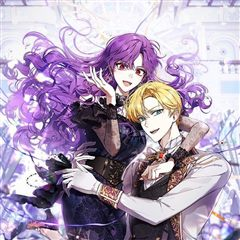
카카오웹툰악녀라서 편하고 좋은데요?
"악녀라서 뭐? 편하고 좋기만 한데?" 2020년 카카오페이지 올해의 웹소설 <악녀라서 편하고 좋은데요?> 웹툰으로 화려하게 다시 태어나다! 은수저X, 금수저X :+: 오리하르콘 수저 :+: 악녀로 빙의한 윤도희 180,000,000도 인생 역전에 성공한다. 소심한 본체 그렇지 못한…
로판사이다빙의카카오웹툰에서 보기 → -
10
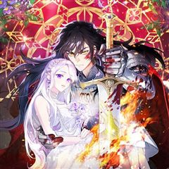
카카오웹툰남편은 됐고, 돈이나 벌렵니다
여친 있는 남자의 아내가 되어 버렸다. 음, 건드리지 말아야겠지? “그럼 넌 바닥에서 자.” “뭐?” 싫은 눈치다. 그래, 바닥은 딱딱하지. 그렇다면 어쩔 수 없다. “손만 잡고 잘게. 누나 믿지?” 그런데 어쩌다 남편과 첫날밤에 침대를 부숴 버린 걸까……. * 황제의 눈밖에 나 유폐…
로판설렘폭발로맨틱코미디카카오웹툰에서 보기 → -
11
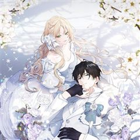
카카오웹툰녹음의 관
남자주인공에게 트라우마를 남긴 계모의 딸에 빙의했다. 이 모든 것은 내가 열 다섯 살 때 쓴 소설 속 안. 괜찮아, 어떻게든 널 행복하게 만들어줄게. 내가 이 소설의 원작자라고! "저는 단 한번도 누님을 가족이라 생각한 적이 없습니다." 남주 행복 프로젝트, 열심히 실천하고 있다고 생…
로판빙의카카오웹툰에서 보기 → -
12
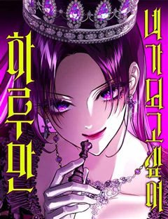
네이버웹툰하루만 네가 되고 싶어
'완벽한 인생이었다, 그 애가 나타나기 전까지는' 반전에 반전을 거듭하는 치밀한 궁중 서스펜스 네이버웹툰 최강자전 19년 대표작.
로판왕족/귀족서양대형견남순정남네이버웹툰에서 보기 → -
13
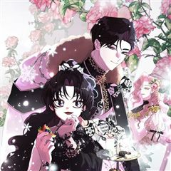
카카오웹툰남주의 입양딸이 되었습니다
"아이를 입양한다” 어느 날 갑자기 떨어진 북부의 주인 보레오티의 폭탄 발언. 그리고 기적처럼 만난 “검은색”을 지닌 아이. 그런데… “근☆육이 제일 좋아~ ☆불끈불끈☆ 모여라~ ٩(๑˃́ꇴ˂̀๑)۶” “이두근 (ง˙∇˙)ว, 삼두근 (ง˙∇˙) ง” “흉근 복근 짜릿해 ദ്ദി ˉ͈…
로판설렘폭발빙의카카오웹툰에서 보기 → -
14
 카카오웹툰
카카오웹툰내 남자 주인공의 아내가 되었다
남주 여주 커플의 아름다운 사랑으로 저주받은 용과 마물 그리고 최종 보스의 영혼까지 처참하게 박살 내는 소설 <황제와 성녀> "……하하, 차라리 지금 죽으면 좀 편히 갈 수 있으려나." 천재 마법사로 칭송받게 될 찬란한 장래, 그것보다 원하는 건 안락한 노후와 평화로운 미래… 이건만,…
로판설렘폭발힐링카카오웹툰에서 보기 → -
15
 카카오웹툰
카카오웹툰사랑받는 막내는 처음이라
세계의 멸망을 막을 유일한 희망으로서 모두에게 희생을 강요받는 삶만 99번째. 제발 이번이 끝이길 바랐는데…! "아가씨가 태어나셨어요!" 기어코 100번째 삶을 시작하고 말았다. 어차피 또 영웅 취급하며 희생시키겠지. 그렇게 생각했는데, "무사히 태어나줘서 고맙구나" "언니가 다 구해…
로판힐링환생카카오웹툰에서 보기 → -
16
 네이버웹툰
네이버웹툰세레나
왕국에서 가장 화려했던 나의 가문이 망했다. 할머니가 선택한 유일한 방법은 계약 결혼뿐. 하필 그 남자와.
왕족/귀족결혼생활악역이주인공공식미남무심남네이버웹툰에서 보기 → -
17
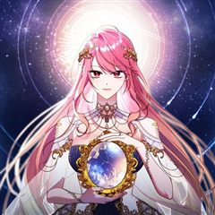
카카오웹툰점괘보는 공녀님
귀신 보는 능력을 가진 탑배우 이시아. 사고 후 '카밀라 소르펠'의 몸에서 눈을 뜬다. 문제는 말이지. "아, 아버지! 살려 주세요!" 이 여자의 끝이 매번 죽음이라는 것! 목숨줄 늘리는 게 우선이니, 일단 여기 터줏대감 귀신들과 대화부터 좀 해 볼까? 어라, 근데 왜 피하고 싶은 사…
로판미스터리환생카카오웹툰에서 보기 → -
18
 카카오웹툰
카카오웹툰황제궁 옆 마로니에 농장
'태양의 손'을 가진 농사 천재, 헤이즐 메이필드. 할아버지가 준 땅문서를 들고 설레는 마음으로 자신의 농장을 찾아가는데… "그 '대단히 높은 신분의 집주인'이… 황제였어?" 위대한 브라타니아 제국의 젊은 황제 이스칸다. 완전무결한 황궁을 꿈꾸던 그에게 닥친 최대 위기. "땅문서에 제…
로판힐링카카오웹툰에서 보기 → -
19
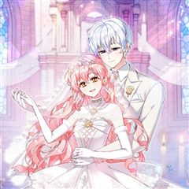
카카오웹툰악당들에게 키워지는 중입니다
즐겨보던 로판 소설의 엑스트라 소녀로 빙의한 지 1년 만에 내가 곧 쫓겨날 신세라는 걸 알게 됐다. 차라리 내 발로 집을 나가겠다고 했더니, “사실은 이 아이가 내 따님입니다. 그렇지, 따님?” 사이코패스 망나니 공자의 눈에 들어 버렸다? ‘놀이 후에 상대한테 준 돈이 섬 하나를 살…
로판미스터리육아물카카오웹툰에서 보기 → -
20
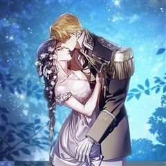
카카오웹툰이 결혼은 어차피 망하게 되어 있다
여섯 살, 카셀의 삶은 이네스에게 선택받은 이후 송두리째 바뀌었다. '평생'이 얼마 만큼인지도 모르는 어린아이에게 '평생'을 약속하게 한 맹랑한 동갑내기 여자아이. 카셀은 곧 빼앗길 자유를 최대한 누리겠다는 듯 해군에 입대해 방탕한 생활을 일삼는다. 이네스는 이 모든 것이 만족스러웠다…
로판눈물샘자극회귀카카오웹툰에서 보기 → -
21
 네이버웹툰
네이버웹툰별을 품은 소드마스터
기사를 동경하는 슬럼가의 부랑아 블라드. 검은 벼락을 맞는 사고 이후부터 들리기 시작한 누군가의 목소리와, 어느 날 갑자기 등장한 푸른 달빛의 기사가 블라드의 세계를 산산조각내면서 뒷골목 소년의 삶이 송두리째 변하기 시작하는데... 높디높은 밤하늘에 있지 않더라도, 아무도 보지 못하는…
서양중세판타지액션시리어스소년물용사네이버웹툰에서 보기 → -
22
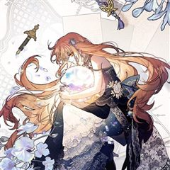
카카오웹툰가짜를 위한 장소는 없다
어미와 공모하여 황녀를 사칭하고, 마탑과 제국을 이간질하여 전쟁을 일으킨 '가짜 황녀', 필로멜. 그녀는 모든 죄가 들통나자 사형 당한다. 실로 악당에 어울리는...... "내가, 아니 책 속의 필로멜이 잘못을 했기로서니 죽일 만큼은 아니잖아!" 필로멜은 괴성을 지르며 읽던 책을 던졌…
로판눈물샘자극육아물카카오웹툰에서 보기 → -
23
 카카오웹툰
카카오웹툰내가 버린 개에게 물렸을 때
윈터 공작가에선 개를 기른다. 주인에게 늘 순종하는 검은 개를.. 윈터가의 공녀, 이블린 윈터. 자신만을 따르던 개, 길라스 블랙을 잔인하게 내쫓는다. “저를 사랑하신다고 하시지 않았습니까.” “사랑? 그 말을 믿었어? 버러지 같은 게 주제도 모르고..” ”이 순간을 후회하시게 될 겁…
로판자극적인미스터리고자극로맨스카카오웹툰에서 보기 → -
24
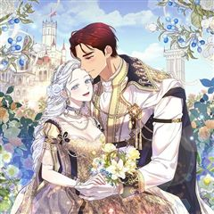
카카오웹툰여보, 나 파업할게요
2회차 결혼 생활, 돌연 파업 선언?! 결혼 생활 10년 동안 무뚝뚝하고 전쟁밖에 모르던 남편 제스터 옆에서 고생만 하다 불치병으로 죽은 카시아. 하지만 눈을 떠보니 10년 전 결혼 후 첫 날로 돌아와 있었다. 어차피 불치병으로 죽을 몸, 카시아는 이번 생엔 아무것도 안 하고 놀고 먹…
로판설렘폭발공감로맨틱코미디카카오웹툰에서 보기 → -
25
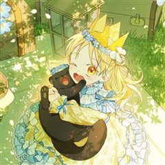
카카오웹툰시한부를 즐겼을 뿐이었는데
시한부였던 나, 빙의도 시한부 캐릭터에 해버렸다? 비록 이번에도 시한부지만 오늘내일하던 내게 21년의 삶이 생겼다. 이렇게 움직였는데 폐도, 심장도 아프지 않아. 숨이 차지만, 이것조차 너무 즐거워! 건강하게만 자라달라는 엄마와 처음 느껴보는 가족들의 사랑. 이번 생은 내게 선물이다.
로판눈물샘자극육아물카카오웹툰에서 보기 → -
26
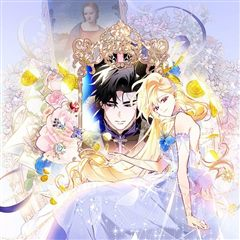
카카오웹툰돈으로 약혼자를 키웠습니다
넘치는 재력, 빼어난 외모. 일리아 블로든의 인생은 완벽했다. 약혼자의 바람을 목격하기 전까지는. "취향, 취미, 내 모든 걸 바꾸고, 바라는 모든 걸 들어줬는데... 더 이상은 호구처럼 살지 않을 거야. 파혼해 주겠어!" 완벽한 파혼을 위한 새로운 약혼자, 카르한 에반테온. 카르한의…
로판설렘폭발사이다로맨틱코미디카카오웹툰에서 보기 → -
27
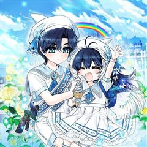
카카오웹툰흑막 범고래 아기님
“안녕 아저씨!” 어느 날 내 앞에 웬 범고래 꼬맹이가 나타났다. “교육기관이라는 거 어디 있는지 알아? 나 가야 해. 거기.” “길, 한참은 잘못 들었는데.” 아무래도 이건 내 딸인 것 같은데. “뭘 봐 아저씨? 한 입 줘?” 내가 아비인 줄 모르는 것 같다. * * * ……라고 생…
로판육아물카카오웹툰에서 보기 → -
28
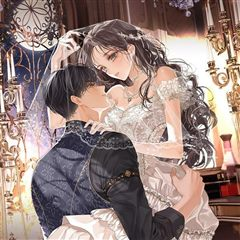
카카오웹툰사랑받는 언니가 사라진 세계
"난 널 죽여 버리고 싶을 만큼 싫어하거든, 시에나." 한 평생 언니의 그림자였고, 그 언니에게 배신당해 죽었다. 그런데… 시간을 거슬러 온 그 날부터 사람들이 달라졌다. "지저의 나흐트가 선택한 아이는 너뿐이다." "대공 전하께서는 당신을 가족이나 다름없는 존재로 인정하고 계십니다.…
로판눈물샘자극타임슬립카카오웹툰에서 보기 → -
29
 카카오웹툰
카카오웹툰남주를 주웠더니 남편이 생겨버렸다
허영심에 가득 찬 웨르아젤 프로시에 그것이 내 별명이었다. 정확히 말하자면 내가 빙의하기 전 웨르아젤의 별명. 웨르아젤 진 빚을 수습하기 위해 백방으로 돈을 구할 방법을 찾던 도중! 공작가에서 잃어버린 아이를 찾는다는 전단지를 발견했다. 사례금은 빚을 청산하고도 펑펑 쓸 수 있는 돈.…
로판힐링로맨틱코미디카카오웹툰에서 보기 → -
30
 카카오웹툰
카카오웹툰계모인데, 딸이 너무 귀여워
다이어트도, 업무도 열심히 하면서 평범하게 살아가던 나 이백합…. 과로사로 죽은 줄 알았는데 자신보다 예쁜 의붓딸을 질투한 나머지 딸을 독살하고, 결국 남편에게 처형되는 동화에 빙의했다?! 이대로 처형당할 수 없으니 귀엽고 사랑스러운 딸, 블랑슈와의 관계를 개선해 사망 플래그를 없애야…
로판개그힐링카카오웹툰에서 보기 →